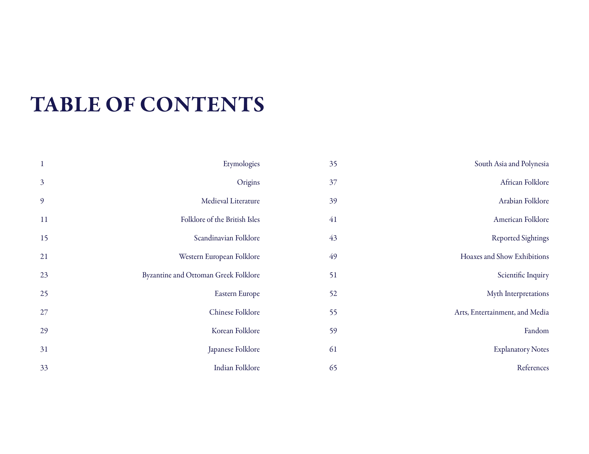
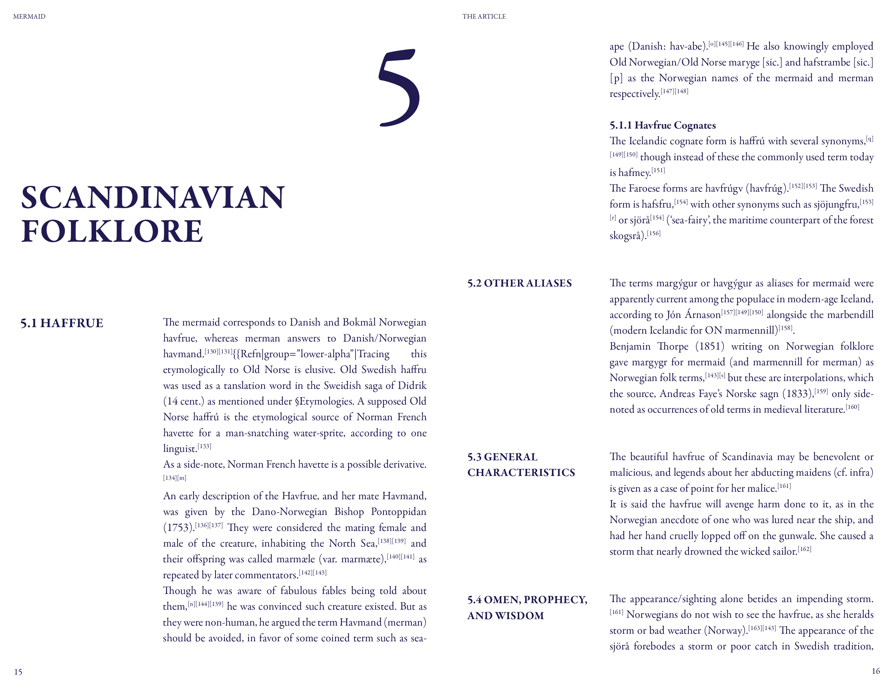
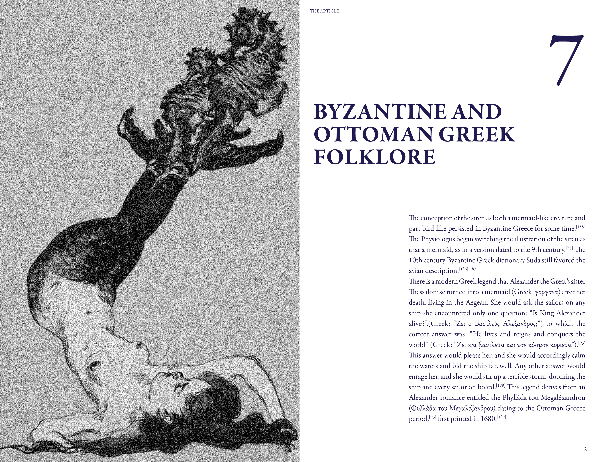
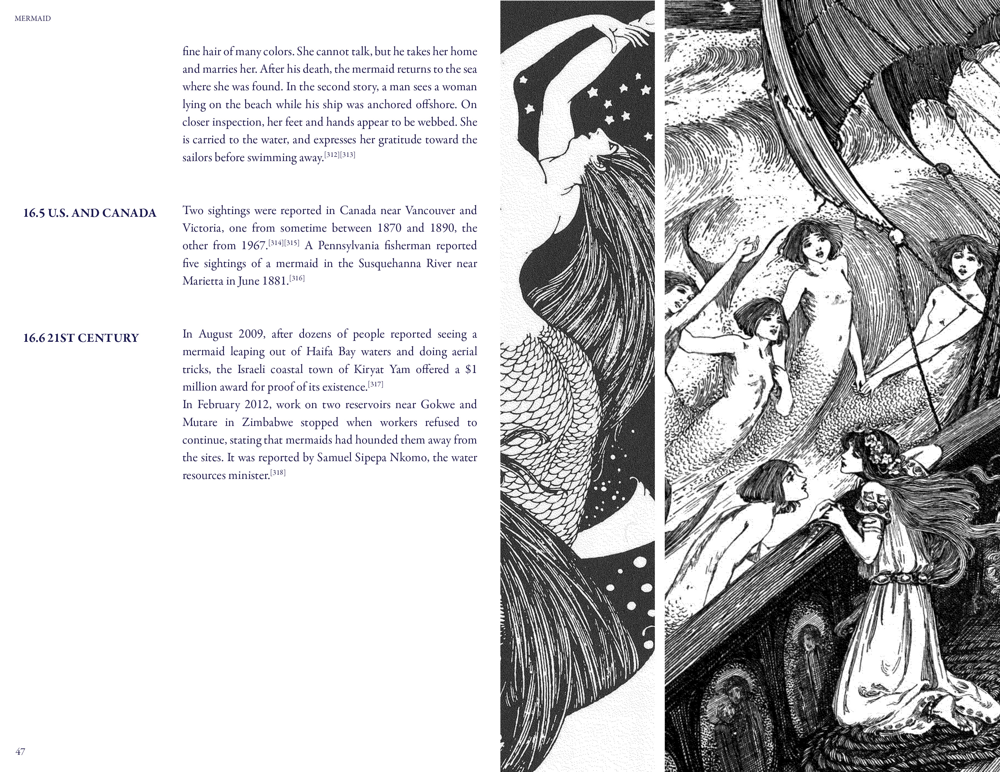
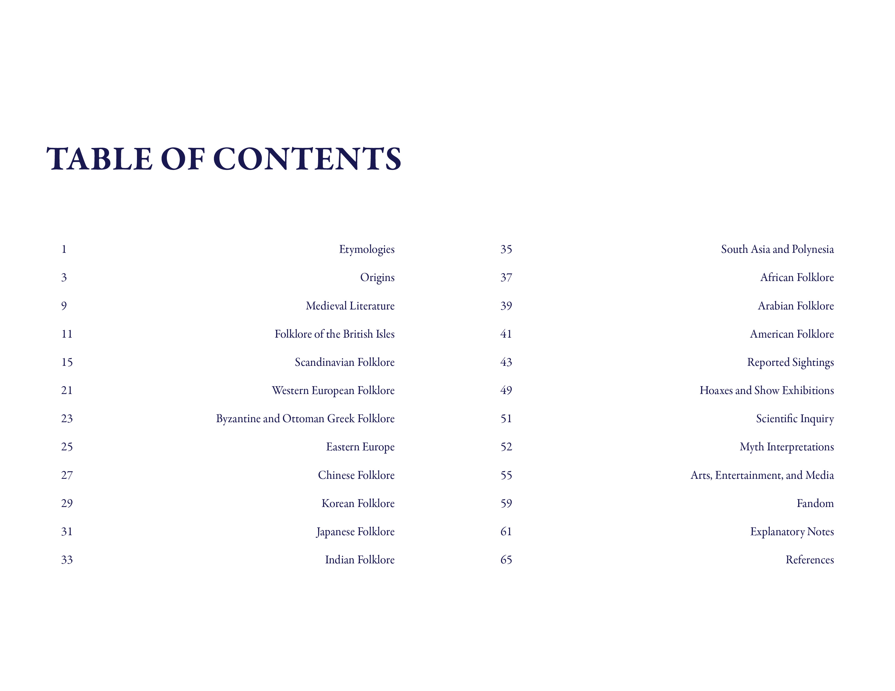
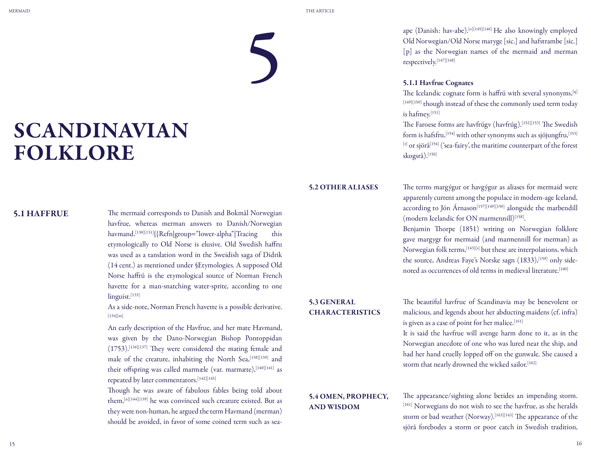
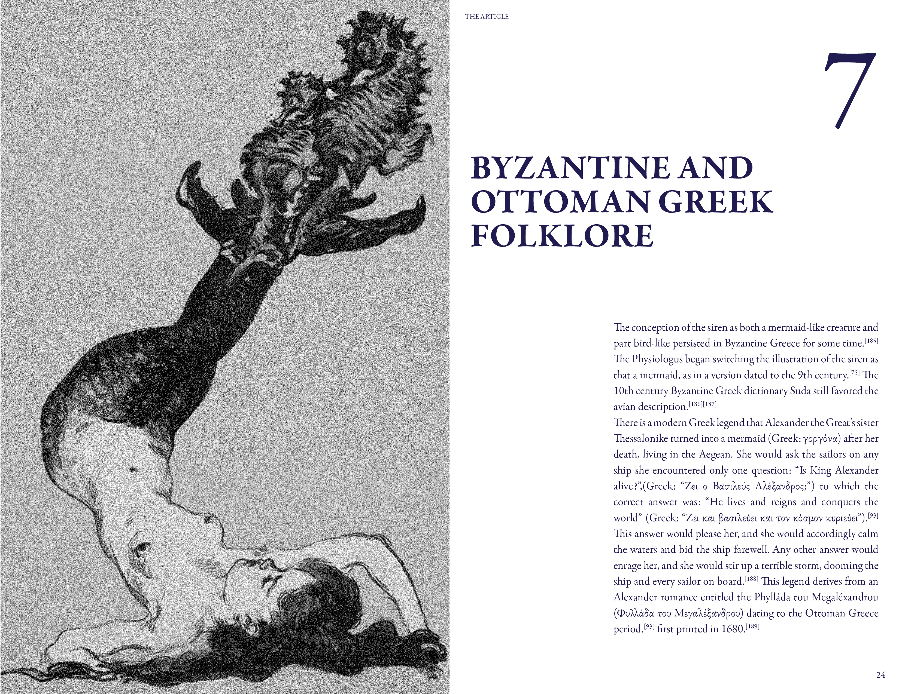
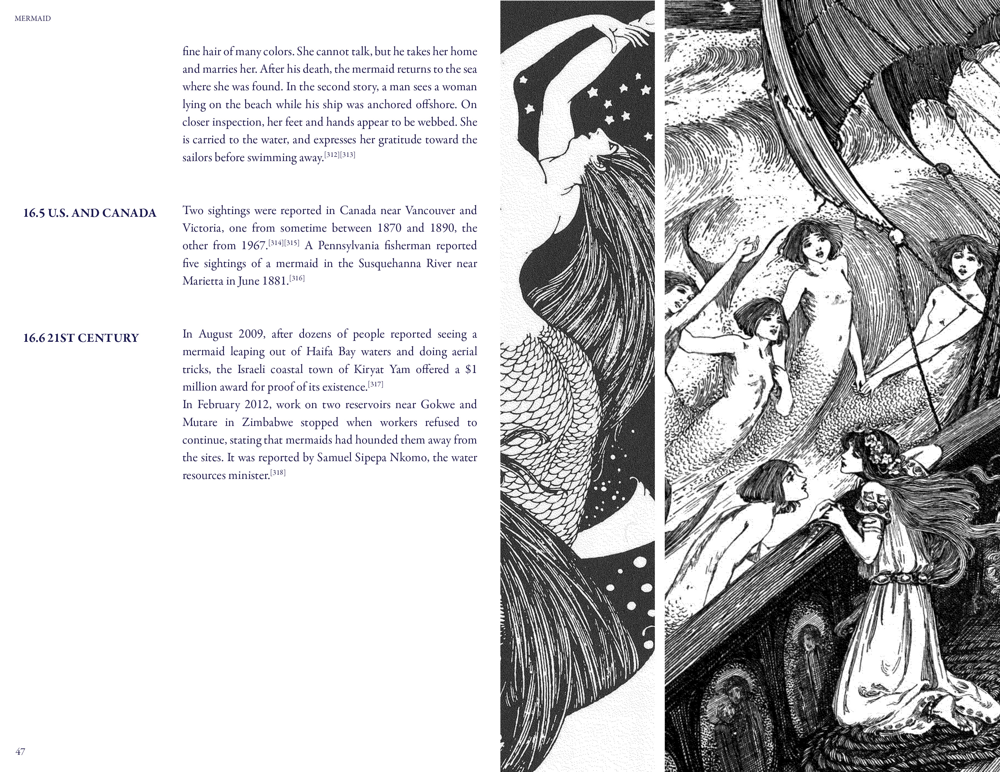

"Mermaid" Wiki Book
The goal of this project was to convert the "Mermaid" Wikipedia article into a book. The format was intended to mimic a textbook, hence the traditional Garamond typeface, with slightly more contemporary margins and alignments. The images have been converted to black-and-white and bitmapped to create a sense of cohesion.
 






